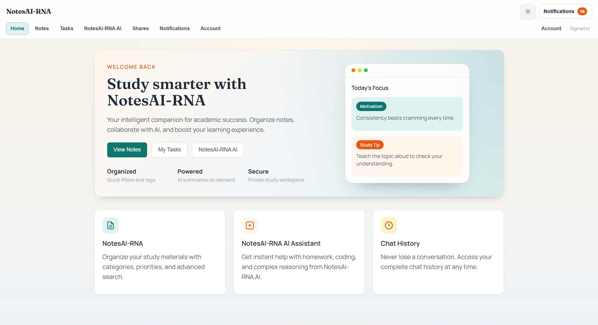
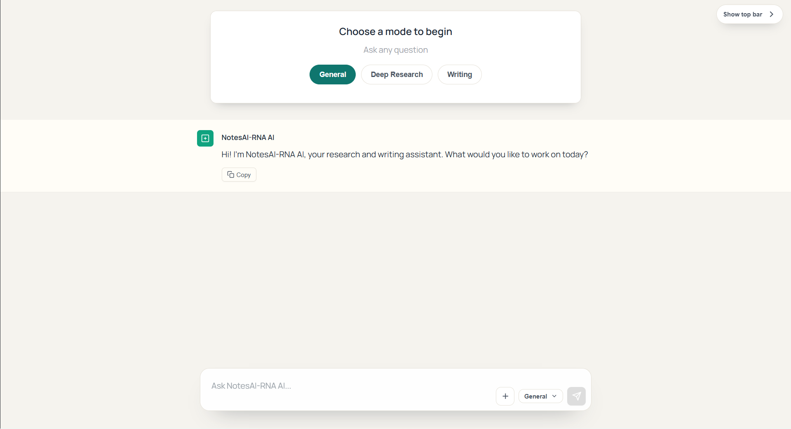

Real product screens
6 key screens
Dashboard, AI, account, notifications, tasks, and sharing
Controlled collaboration
Copy links, add people, and revoke access from one place
Web-ready layout
Looks cleaner and more productive on PC and tablet screens
Dashboard, AI, tasks, notifications, and sharing now lead the story.
NotesAI-RNA now presents the actual experience visitors care about: a clean dashboard, guided AI modes, task management, account controls, notifications, and shared links that can be revoked whenever needed.
Focused dashboard
General, research, and writing AI modes
Revocable shared links
Tasks and account controls in one flow

Unified dashboard
Welcome, focus prompts, notes access, AI entry points, and study actions stay in one calm surface.

AI modes
Switch between general help, deep research, and writing support.

Collaboration control
Share, refresh, add users, and revoke links with a single control panel.
What changed
The website now mirrors the real product, not placeholder concepts.
The strongest upgrade is simple: visitors can finally see the important screens and understand how NotesAI-RNA handles study, writing, collaboration, and account management.
Choose the right mode for the job
The AI screen presents a more serious workflow with clear entry points for quick questions, deeper research, and guided writing.
- General mode for fast answers
- Deep research mode for longer work
- Writing mode for drafting and editing
Share safely and keep control
The shared links view feels more professional because it shows real management actions instead of vague collaboration promises.
- Copy links for fast sharing
- Add users directly from the panel
- Revoke links whenever access should end
Account and alerts stay visible
Account settings, notification controls, and locked API key management make the product feel more complete and trustworthy.
- Clear sign-in and logout state
- Notification actions in one clean card
- Device PIN gate for sensitive AI key access
Full walkthrough
Every important screen now has a polished place on the site.
The gallery below turns the product into the design system: the dashboard leads, AI sits up front, and the supporting controls show the app is genuinely usable beyond a demo.
Dashboard
Start from one clear home screen.
The dashboard introduces the product immediately with notes, AI entry points, chat history, and focus prompts in a single polished view.
- Fast buttons for notes, tasks, and AI
- Study tips and motivation blocks for daily focus
- A calmer overview that feels ready for real work
NotesAI-RNA AI
Research and writing start with a clearer prompt flow.
The AI screen shows a confident entry state, with mode selection and a focused composer that feels more premium.
- Mode switcher for general, research, and writing
- Clean input area built for longer desktop sessions
Account
Account settings look secure and easy to understand.
The account screen gives the product a stronger sense of ownership, authentication, and user trust.
- Visible signed-in state with quick actions
- Protected AI key management behind device PIN

Shared links
Collaboration feels professional when access can be governed.
The collaboration control panel turns sharing into a serious feature with readable tokens, access state, refresh controls, and revoke actions.
- Copy share links without leaving the workspace
- Add people to resources from one control point
- Revoke links instantly when sharing should stop
Notifications
Alerts stay lightweight and under control.
Even an empty state feels cleaner here because visitors can see how alerts are enabled, cleared, or marked read.
- Enable alerts when needed
- Mark all items read or clear the stream

Task manager
Plan, prioritize, and finish work in the same place.
The task view adds structure with search, status filters, priorities, due dates, and action buttons for completion.
- Create tasks with dates and priority levels
- Search, filter, complete, and manage tasks quickly

AI output still works best with user review.
NotesAI-RNA can speed up drafting, studying, and research, but people should still check important facts, decisions, and final submissions before using them.